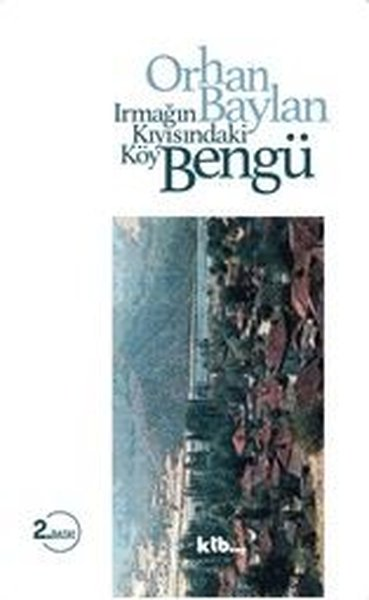

حديث صريح · الحلقة 24
السيوف فتحت البلدان والدراويش فتحوا القلوب
هل يقتصر التبشير على التعريف بالدين؟
Orhan Baylan · 12:06 ·
النص بالتركية (لغة الحلقة الأصلية)
الوصف
Misyonerlik yalnızca din anlatmak mıdır?
Orhan Baylan, Kitabın Ortasından programının bu bölümünde Protestan misyonerlerin Osmanlı coğrafyasındaki çalışma yöntemlerini, Selçuklu ve Osmanlı dervişlerinin faaliyetleriyle karşılaştırıyor.
Baylan’a göre dervişler gittikleri bölgelerde yalnızca dinî irşat yapmıyor; yol, değirmen, fırın, el sanatları, misafir ağırlama ve ihtiyaç sahiplerine yardım gibi hizmetlerle toplumun içinde yer alıyordu.
Balkanlarda tekkelerin ve dergâhların çevresinde oluşan yerleşimlerden söz eden Orhan Baylan, bu yapıların fethedilen bölgelerde kalıcı bir sosyal ve kültürel etki oluşturduğunu anlatıyor.
Programda ayrıca Amerikalı Protestan misyonerlerin Osmanlı topraklarında sağlık, eğitim, yardım ve yayın faaliyetleri üzerinden nasıl nüfuz kurmaya çalıştıkları da ele alınıyor.
Orhan Baylan’ın temel sorusu ise şu:
Biz kendi medeniyetimizin yöntemlerini ve ruhunu kaybederken başkaları bunları kullanarak nasıl güç kazandı?
Kitabın Ortasından, Orhan Baylan’ın anlatımıyla Seyf TV’de.
00:00 Giriş
00:12 Misyonerlik Neden Önemli Bir Konu?
00:25 Protestan Misyonerlerin Çalışma Yöntemi
00:39 Dervişlerin Yöntemini mi Kullandılar?
00:56 Misyonerlik Sadece Din Değildir
01:12 1820’den Sonra Osmanlı Topraklarında Misyonerlik
01:29 Kültür ve Yaşam Tarzı Üzerinden Etki
02:21 Bu Yöntemi Nereden Öğrendiler?
02:30 Selçuklu ve Osmanlı Dervişleri
02:51 Dervişlerin Temel Görevi Neydi?
03:19 Balkanlardaki İlk Osmanlı Yerleşimleri
03:43 Fethedilen Topraklarda Kalıcılığı Kim Sağladı?
04:04 Kolonizatör Türk Dervişleri
04:12 Tekke ve Dergâhlar Nasıl Kuruluyordu?
04:42 Yerel Halka Hizmet Etmek
05:16 “İnsan İhsanın Kuludur”
05:25 Amerikalı Misyonerler Aynı Yöntemi Nasıl Kullandı?
05:58 Misyonerlerin Rapor ve Bilgi Toplama Sistemi
06:16 Blagay Tekkesi Örneği
06:38 Akıncıların Kalplerini Yumuşatan Tekke
07:42 Tekkelerin Çevresinde Köyler Nasıl Kuruldu?
08:08 Devlet Dergâhları Nasıl Destekliyordu?
08:31 Misyonerlerin Mali Kaynakları
09:06 Robert Koleji Kadrosunun Fırın Faaliyeti
09:22 Misyoner Doktorların Etkisi
09:47 Dervişlerin Balkanlardaki Rolü
10:01 Osmanlı Neyi Kaybetmeye Başladı?
10:38 Tekke ve Zaviyelerde Bozulma
10:54 Kaybedilen Ruh Nasıl Yeniden Kazanılır?
11:13 “Özümüze Dönmezsek…”
11:29 Medeniyet Kodları Neden Önemli?
11:45 Kapanış
📚 Kitapları Almak İçin :https://www.ktbkitap.com/

كتب المتحدث

Öğlen Karanlığı
شراء

Irmağın Kıyısındaki Köy Bengü
شراء

من البرنامج نفسه

حديث صريح
أي ديمقراطية يريدها الغرب لتركيا؟
Orhan Baylan 9:55

حديث صريح
ينصح غيره ويخالف نصحه
Orhan Baylan 14:10

حديث صريح
ماذا جرى للأمانات المقدسة؟
Orhan Baylan 11:14

حديث صريح
كيف تكونت الثروات الرأسمالية الكبرى في تركيا؟
Orhan Baylan 14:31

حديث صريح
هل يكفي الفوز بالانتخابات لإدارة الدولة؟
Orhan Baylan 14:45

حديث صريح
ماذا جرى لأملاك وقف آيا صوفيا؟
Orhan Baylan 14:52

حديث صريح
تركيا بلا إرهاب والنقاش حول المرحلة الجديدة
Orhan Baylan 15:09

حديث صريح
ماذا خسرت تركيا بسبب مساعدات مارشال؟
Orhan Baylan 14:26